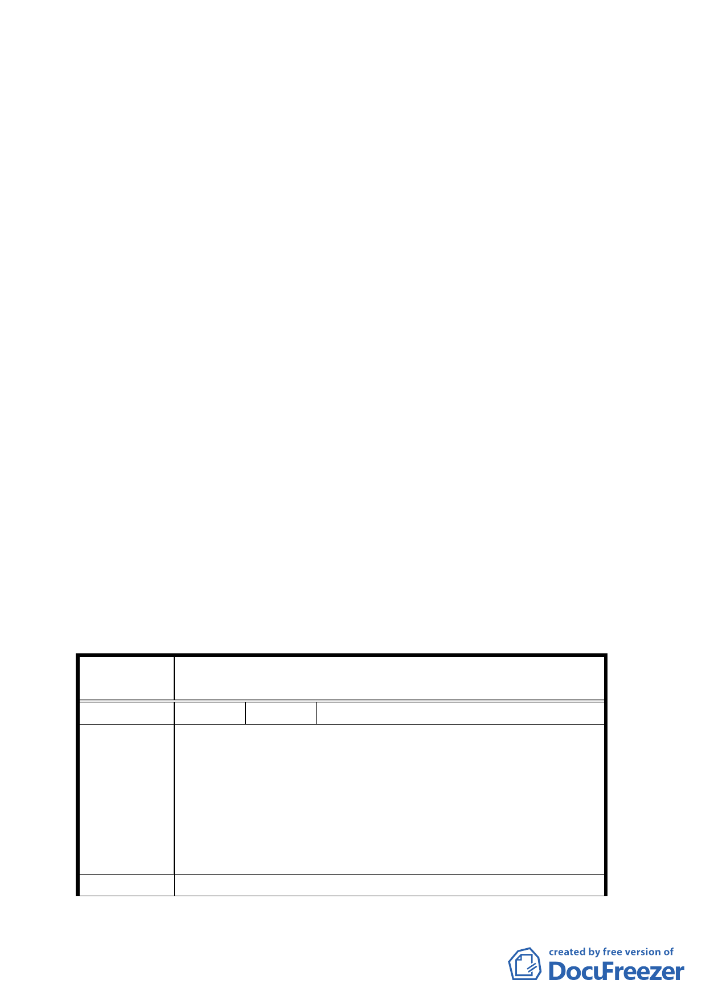

討論事項一
案名：變更臺北市內湖區西湖段四小段 186 地號暨文德段五小
段 155 地號市場用地為停車場用地計畫案
說明：
一、本案係市府九十四年七月一日以府都規字第 09413523800
號函送到會。
二、法令依據：都市計畫法第 27 條第 1 項第 4 款
三、申請單位：台北市停車管理處
四、計畫範圍：詳計畫圖所示
五、變更理由及內容：詳計畫書
六、公民若團體所提意見：共計四件
決議：
一、同意內湖區西湖段四小段 186 地號土地（洲子市場）變更
為停車場用地。有關內湖區文德段五小段 155 地號土地（瑞
光市場）請需地單位參考委員意見提出興建配置方案並與
當地居民充分溝通後，再進行都市計畫變更。
二、公民或團體所提意見審決如后附綜理表。
臺北市都市計畫委員會公民或團體所提意見綜理表
案
名
變更臺北市內湖區西湖段四小段 186 地號暨文德段五小段
155 地號市場用地為停車場用地計畫案
編 號 １ 陳情人 李議員彥秀
由於兩處用地皆位於內湖科技園區用地內，僅作為停車場
使用對於周邊發展助益甚小，且內湖科技園區大樓於興建
時皆有申請停車獎勵容積，亦應協助負擔地區周邊停車需
陳 情 理 由 求，業者拒絕開放停車場公大眾使用，卻一味要求政府單
位興建停車場，由全民負擔廠商的停車成本，殊為不公，
將上述兩處用地單純作為停車場用地使用亦不符鄰近居民
需求。
建 議 辦 法 建議加註市府應於開發時，採多目標使用方式進行，並廣
二